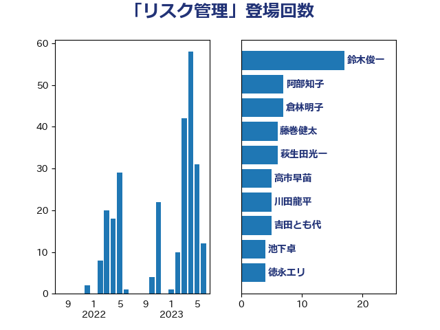

単語「リスク管理」

| 鈴木俊一 | 自由民主党 | 17 回 |
| 阿部知子 | 立憲民主党 | 7 回 |
| 倉林明子 | 日本共産党 | 7 回 |
| 藤巻健太 | 日本維新の会 | 6 回 |
| 萩生田光一 | 自由民主党 | 6 回 |
| 高市早苗 | 自由民主党 | 5 回 |
| 川田龍平 | 立憲民主党 | 5 回 |
| 吉田とも代 | 日本維新の会 | 5 回 |
| 池下卓 | 日本維新の会 | 4 回 |
| 徳永エリ | 立憲民主党 | 4 回 |
| 藤岡隆雄 | 立憲民主党 | 3 回 |
| 神田潤一 | 自由民主党 | 3 回 |
| 柳ヶ瀬裕文 | 日本維新の会 | 3 回 |
| 堀場幸子 | 日本維新の会 | 3 回 |
| 細田健一 | 自由民主党 | 2 回 |
| 米山隆一 | 立憲民主党 | 2 回 |
| 浜田靖一 | 自由民主党 | 2 回 |
| 河野太郎 | 自由民主党 | 2 回 |
| 松本剛明 | 自由民主党 | 2 回 |
| 後藤茂之 | 自由民主党 | 2 回 |
| 川崎ひでと | 自由民主党 | 2 回 |
| 古賀之士 | 立憲民主党 | 2 回 |
| 鈴木英敬 | 自由民主党 | 1 回 |
| 鈴木義弘 | 国民民主党 | 1 回 |
| 野間健 | 立憲民主党 | 1 回 |
| 遠藤良太 | 日本維新の会 | 1 回 |
| 越智隆雄 | 自由民主党 | 1 回 |
| 谷公一 | 自由民主党 | 1 回 |
| 簗和生 | 自由民主党 | 1 回 |
| 稲津久 | 公明党 | 1 回 |
| 福島みずほ | 社会民主党 | 1 回 |
| 田村貴昭 | 日本共産党 | 1 回 |
| 田村智子 | 日本共産党 | 1 回 |
| 牧野たかお | 自由民主党 | 1 回 |
| 牧山ひろえ | 立憲民主党 | 1 回 |
| 熊谷裕人 | 立憲民主党 | 1 回 |
| 永岡桂子 | 自由民主党 | 1 回 |
| 櫻井周 | 立憲民主党 | 1 回 |
| 横沢高徳 | 立憲民主党 | 1 回 |
| 柳本顕 | 自由民主党 | 1 回 |
| 柘植芳文 | 自由民主党 | 1 回 |
| 林芳正 | 自由民主党 | 1 回 |
| 松野博一 | 自由民主党 | 1 回 |
| 本田顕子 | 自由民主党 | 1 回 |
| 末松信介 | 自由民主党 | 1 回 |
| 斉藤鉄夫 | 公明党 | 1 回 |
| 掘井健智 | 日本維新の会 | 1 回 |
| 平木大作 | 公明党 | 1 回 |
| 川合孝典 | 国民民主党 | 1 回 |
| 岸真紀子 | 立憲民主党 | 1 回 |
| 岡田直樹 | 自由民主党 | 1 回 |
| 山谷えり子 | 自由民主党 | 1 回 |
| 山田宏 | 自由民主党 | 1 回 |
| 山口那津男 | 公明党 | 1 回 |
| 小林鷹之 | 自由民主党 | 1 回 |
| 小山展弘 | 立憲民主党 | 1 回 |
| 寺田稔 | 自由民主党 | 1 回 |
| 大野敬太郎 | 自由民主党 | 1 回 |
| 吉田宣弘 | 公明党 | 1 回 |
| 吉田久美子 | 公明党 | 1 回 |
| 吉川ゆうみ | 自由民主党 | 1 回 |
| 加藤勝信 | 自由民主党 | 1 回 |
| 伴野豊 | 立憲民主党 | 1 回 |
| 伊佐進一 | 公明党 | 1 回 |
| 中野洋昌 | 公明党 | 1 回 |
| 中谷一馬 | 立憲民主党 | 1 回 |
| 中司宏 | 日本維新の会 | 1 回 |
| 上田清司 | 国民民主党 | 1 回 |